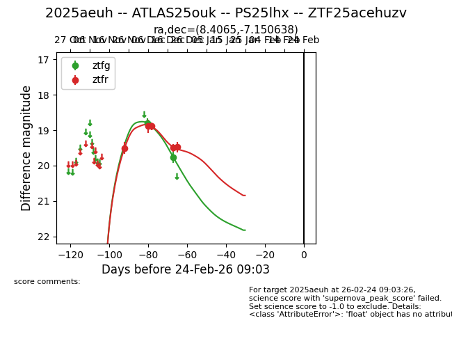
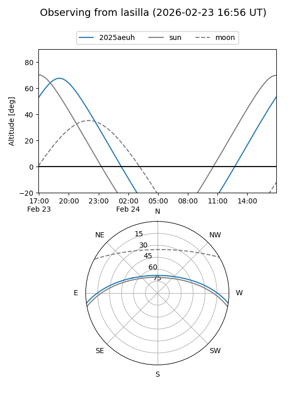
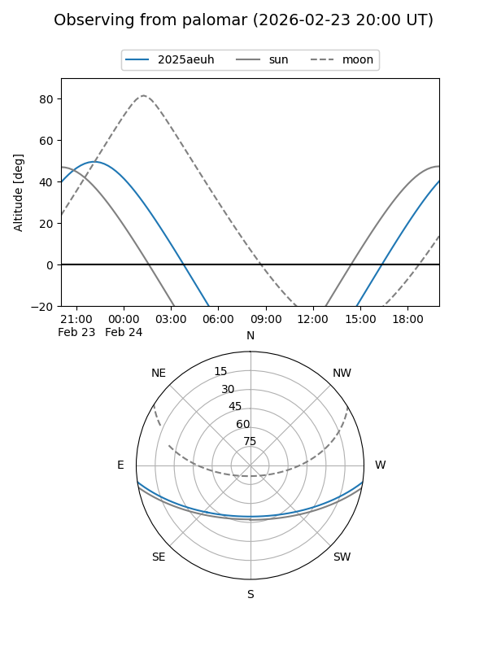
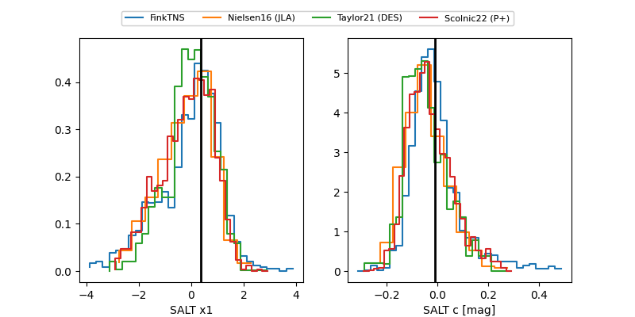

2025aeuh
Target 2025aeuh at 2025-12-31 03:16
Aliases and brokers:
FINK:
Lasair:
ALeRCE:
TNS:
YSE:
alt names
ZTF25acehuzv (ztf,fink_ztf)
2025aeuh (tns,yse)
ATLAS25ouk (atlas)
PS25lhx (panstarrs)
Coordinates:
equatorial (ra, dec) = 8.4065,-7.15064
equatorial (HMS+DMS) = 00:33:37.55,-07:09:02.30
galactic (l, b) = (110.1757,-69.58004)
Flags:
Photometry:
last atlaso=19.19, ztfg=19.76, ztfr=19.47
2 atlaso, 2 ztfg, 5 ztfr detections
Lightcurve

Visibility


Additional plots
